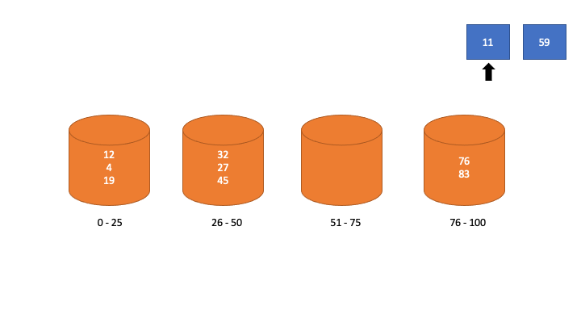
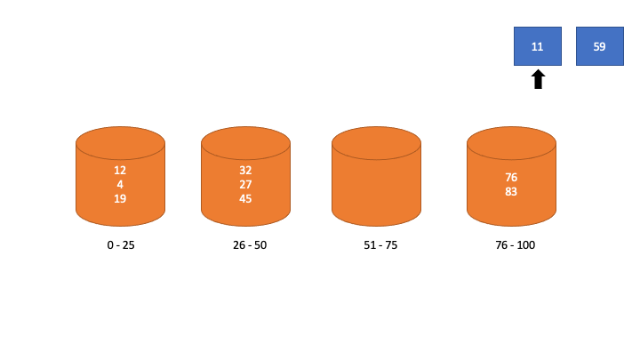

Bucket Sort
O problema
Imagine que você vai jogar Presidente. Na distribuição de cartas, a regra é que todos os jogadores recebam cartas até que o baralho acabe. Assim como qualquer outro jogo de carta, Presidente possui um hierarquia de naipes, seguindo a ordem crescente de Ouros (losango vermelho), Espadas (parece uma seta gordinha), Copas (coração) e Paus (parece uma árvore), e é normal que cada jogador coloque as suas cartas em ordem crescente de Forma Numérica. No entanto, em jogos de carta o padrão é que os Naipes possuam um valor agregado maior do que os de números. O problema é que muitos jogadores acabam deixando os valores dos Naipes de lado no momento de organização das cartas antes do jogo começar.
Pode parecer não intuitivo organizar os Naipes antes dos valores numéricos das cartas, mas provavelmente você faz isso de forma inconsciente. Como a ordem dos naipes não é tão natural como a ordem numérica, é um pouco contraintuitivo tentar ordenar as cartas tanto por naipe quanto por número ao mesmo tempo. Se você fizer isso, perdará mais tempo procurando o lugar correto da carta e, no pior caso, terá que percorrer todas as cartas para achar o local correto. Assim, é muito mais fácil e natural para o cerébro humano ordenar primeiro por um critério, depois por outro.
Checkpoint
Sabendo do que foi dito acima, qual voce acha que seria a forma ideal de um jogador ordenar suas cartas?
Gabarito
O jeito ideal de ordená-las seria primeiro ordenar de forma crescente os Naipes e depois ordernar as cartas pela ordem numérica do jogo em cada Naipe.
Analogamente, a ideia do Bucket Sort é parecida com o comportamento do jogador de Presidente: recebe uma amostra desordenada, divide ela em vários “grupos” com intervalos específicos, ordena cada grupo e junta todos os grupos, do intervalo com os menores valores ao intervalo com os maiores.
Pra simplificar a descrição da ideia, segue abaixo a lógica por trás do algoritmo:
CARTAS = O conjunto de cartas do baralho
NAIPES(BUCKETS) = Intervalos de valores para separar e organizar cartas
VALOR MÁXIMO = A carta cujo valor no jogo é o maior, ou seja, a carta mais forte do jogo
Enquanto percorrer o conjunto CARTAS, alocar cada carta individualmente em um dos NAIPES
se ela apresentar o mesmo.
Todos os NAIPES estarão com as cartas de tipo correto, entretanto, estarão fora de ordem.
Logo, em cada NAIPE deverá ser feito uma ordenação para deixar as cartas em ordem crescente.
Após ordenar todos os NAIPES, montar sua sequência de cartas
deixando os NAIPES de forma crescente.
Um exemplo de ordenação com inteiros do resultado final do algoritmo pode ser visto abaixo:
Exemplo
 
Implementação
Para construir a lógica da ordenação do Bucket Sort, é preciso estabelecer simplificações. A mais importante é que o número de buckets será predefinido, fixo para cada implementação. Outra simplificação é a de que o Array ordenado será de inteiros.
Para definir os limites de valores que cada Bucket terá existem várias estratégias. Sabendo que o programa terá todos os valores do array, assim como a quantidade de buckets, é possível pensar num cálculo de limites de um bucket.
Pensando num valor inteiro, é possível saber quantas unidades cabem em cada bucket apenas dividindo o valor pela quantidade de buckets. Por exemplo, se o valor é 10 e existem 5 buckets, 2 unidades vão para cada bucket.
Checkpoint
Se o vetor começa em 0, o que pode ser considerado o valor a ser dividido pelo número de buckets?
Gabarito
O valor máximo do vetor corresponde ao inteiro que, ao ser dividido, resultará em quantos valores vão em apenas um bucket.
No entanto, um vetor a ser ordenado não necessariamente começa de 0 e, por isso, o cálculo do Range estará equivocado.
Checkpoint
Sabendo que um vetor começa em -5 e acaba em 13, qual o módulo do tamanho do vetor? E se começar em 2 e ir até 13?
Gabarito
Indo de -5 a 13, o vetor corresponde a 18 unidades. De 2 a 13, são 11 unidades.
Dessa forma, para englobar tanto valores negativos como vetores que começam após o 0, não basta utilizar apenas o valor máximo do vetor, mas também o mínimo.
Checkpoint
Utilizando a estratégia já citada, qual seria uma fórmula para calcular quantas unidades cabem em cada bucket?
Gabarito
\[r = \frac{Vmax-Vmin}{k}\]
Já que o Array será de inteiros, faz sentido ter apenas Ranges inteiros para os buckets, já que nunca haverá valores entre os inteiros que devem ser considerados ou não. Por isso, a divisão acima pode ser corrigida de dois jeitos: arrendondando o valor pra cima ou pra baixo. Se for arredondado pra cima, o Range será maior e, por isso, foi a escolha da implementação.
Checkpoint
Quanto será o Range de um Bucket se uma lista vai de 1 a 12 e o código tem 3 Buckets?
Gabarito
Com valor mínimo de 1 e máximo de 12, o Range é aproximadamente 3.67. Arredondando pra cima, cada bucket terá range de 4. Ou seja, primeiro bucket de 0 a 3, o segundo de 4 a 7 e o terceiro de 8 a 11.
Resumindo:
Tendo o Array e k como argumentos
Calcule o Range a partir dos limites do Array
Crie k Buckets vazios
Checkpoint
Faça a implementação em python do pseudocódigo acima.
Gabarito
minimum=min(array) maximum=max(array) r=ceil((maximum-minimum)/k) buckets=[] for i in range(k): buckets.append([])
Agora é preciso iterar entre os elementos para alocá-lo no bucket certo. Um jeito de fazer isso é iterar em cada bucket e verificar se o elemento pertence a ele ou não a partir de seu índice. No entanto, esse processo teria um for dentro de outro, dando uma complexidade quadrática em todos os casos. Dessa forma, é necessário implementar a atribuição dos elementos em cada bucket com apenas uma iteração.
Checkpoint
Qual iteração e estratégia parece fazer sentido nesse caso?
Gabarito
Já que todos os elementos devem ser distribuídos, fica claro que uma interação no array é necessário. A estratégia ideal é: a partir do valor do elemento, descobrir o índice do bucket que ele deve ser inserido e dar append.
O problema agora é descobrir o índice do bucket a partir do elemento. Nesse contexto, o valor do range ajuda a definir esse cálculo pois ele define o “tamanho” de cada bucket.
Checkpoint
Sabendo que o índice do bucket é como uma contagem, que operação com o range faria sentido nesse caso?
Gabarito
Ao dividir o valor do elemento pelo range, o resultado é, basicamente, quantos ranges cabem no elemento. No entanto, isso é verdadeiro se a origem está em 0, e se não estiver é necessário subtrair o valor mínimo.
Abaixo segue a explicação visual do cálculo do índice:
Considerando o exemplo acima, a divisão daria um valor aproximado de 1,6. O índice do bucket do V deve ser 1, pois ele deve estar no segundo bucket. Dessa forma, basta arredondar para baixo o valor da divisão.
Checkpoint
Faça a implementação em python da distribuição dos elementos nos buckets.
Gabarito
for v in array: indice=floor((v-minimum)/r) buckets[indice].append(v)
A lista buckets agora possui k listas com os elementos da lista alocados. Basta iterar entre cada bucket, ordenar cada um e concatenar os buckets.
Checkpoint
Implemente o Bucket Sort em Python. Não é necessário se preocupar com a ordenação interna dos buckets, foque nas operações discutidas acima. Para representar a ordenação interna, pode usar a função sort(), nativa do python.
Gabarito
def bucket_sort(array, k): minimum=min(array) maximum=max(array) r=ceil((maximum-minimum)/k) buckets=[] for i in range(k): buckets.append([]) for v in array: indice=floor((v-minimum)/r) buckets[indice].append(v) s=[] for b in buckets: s.append(sorted(b)) #Note que a ordenação dentro do bucket é feito pelo #insertion sort, mas isso será discutido em breve. lista_final=[] for i in s: lista_final+=i return lista_final
No papel, parece estar funcionando corretamente. No entanto, imagine que o usuário está ordenando com 3 buckets, Vmax=13 e Vmin=1. Nesse caso, com a conta do Range dando 4, o último bucket irá cobrir de 8 a 11. É necessário um último bucket para cobrir o elemento 13, principalmente pela aproximação pra cima que foi feita na conta do Range.
O jeito mais fácil de fazer isso é fazer uma verificação do valor do índice dentro da iteração. Se o índice passa o tamanho da lista, será necessário criar um Bucket depois de todos os outros, para alocar essas exceções.
Checkpoint
Tente implementar essa correção descrita acima na iteração dos elementos.
Gabarito
for v in array: indice=floor((v-minimum)/r) if indice==len(buckets): buckets.append([v]) else: buckets[indice].append(v)
Sendo assim, segue a implementação completa do Bucket Sort.
def bucket_sort(array, k):
minimum=min(array)
maximum=max(array)
r=ceil((maximum-minimum)/k)
buckets=[]
for i in range(k):
buckets.append([])
for v in array:
indice=floor((v-minimum)/r)
if indice==len(buckets):
buckets.append([v])
else:
buckets[indice].append(v)
s=[]
for b in buckets:
s.append(sorted(b))
lista_final=[]
for i in s:
lista_final+=i
return lista_final
Complexidade
De forma sucinta, o algortimo do bucket sort em questão pode ser subdividido em 3 tarefas. Com um vetor de n elementos temos que:
1. Subdividir o vetor original em k buckets, sendo a quantidade de elementos em cada bucket igual a \((\frac{n}{k})\)
2. Ordenar os valores no interior de cada bucket utilizando insertion sort.
3. Concatenar os buckets já ordenados em um vetor.
A partir do custo, ou seja, da complexidade de cada uma dessas etapas, podemos determinar a complexidade total do bucket sort. Vamos começar analisando a primeira tarefa. O código a seguir é referente a ela, e foi extraído do código do bucket sort disponibilizado anteriormente.
for v in array:
indice=floor((v-minimum)/r)
if indice==len(buckets):
buckets.append([v])
else:
buckets[indice].append(v)
Checkpoint
Tente deduzir a complexidade dessa operação a partir do código.
Gabarito
Esse for percorre o array original inteiro apenas uma vez. Portanto, como temos n elementos no array, a complexidade dessa tarefa será \(O(n)\).
Como o bucket sort deve principalmente ser usado com distribuições uniformes, consideraremos uma array distribuído de tal maneira para determinar a complexidade da segunda etapa.
Partindo do pressuposto que utilizaremos o insertion sort como algoritmo interno, temos que o caso médio do insertion tem complexidade \(O(n^2)\). No entanto, vale ressaltar que esse algortimo é especialmente efetivo em vetores pequenos e/ou crescentes. Assim o bucket sort tenta explorar essas características do insertion para que o caso médio de complexidade não seja \(O(n^2)\).
Checkpoint
Denominando k a quantidade de buckets utilizados no algoritmo e n o número total de elementos do vetor original, determine a complexidade do insertion sort no interior de cada bucket.
Gabarito
Partindo da complexidade \(O(n^2)\), temos que a quantidade de elementos a serem ordenados pelo insertion em cada bucket será \(O(\frac{n}{k})^2\).
Checkpoint
Após determinar a complexidade por bucket, tente agora inserir a quantidade total de buckets do algortimo nessa complexidade.
Gabarito
Como temos k buckets para rodar o insertion sort, a complexidade será de \(O(\frac{n^2}{k^2} \cdot k)\), que será igual a \(O(\frac{n^2}{k})\).
Mesmo depois dessas observações, você pode ter percebido que a complexidade dessa etapa do algoritmo continua sendo \(O(n^2)\). Sim, pelas regras de simplificação da Notação O, nada mudou. Contudo, nessas operações que reside a magia do bucket sort.
\[O(\frac{n^2}{k})\]
Vamos fazer alguns experimentos com a complexidade acima…
Sendo k o número de buckets e n o número total de elementos do vetor original, vamos supor que em uma implementação do algoritmo optemos por colocar todos os elementos em apenas um bucket. Nesse caso, k será igual a 1, fazendo com que a complexidade resultante seja \(O(n^2)\). Esse é exatamente o pior caso do bucket sort. Quanto temos um ou poucos buckets, teremos mais elementos por bucket para o insertion ordenar, o que não é desejável e eficiente.
Vamos tentar algo diferente…
Checkpoint
Calcule a complexidade de \(O(\frac{n^2}{k})\) quanto temos muitos buckets, ou seja, quando \(k \approx n\).
Gabarito
Quando \(k \approx n\), a complexidade dessa etapa será \(O(\frac{n^2}{n})\). Nesse caso, observamos que quanto maior o número de buckets, mais a complexidade se comporta linearmente. Assim, acabamos de deduzir o melhor caso do algoritmo.
Com a complexidade da segunda etapa definida, resta apenas concatená-los na ordem correta, sendo essa a terceira etapa. Isso ocorrerá em tempo proporcional ao número de buckets, tendo complexidade \(O(k)\). Assim, teremos que a complexidade final do algoritmo será a soma das três etapas:
\[O(n + \frac{n^2}{k} + k)\]
Tabela de complexidade
| Complexidade | |
|---|---|
| Pior caso | \(O(n^2)\) |
| Caso médio | \(O(n + \frac{n^2}{k} + k)\) |
| Melhor caso | \(O(n)\) para \(k \approx n\) |
| Memória | \(O(n+k)\) |
Atividade Extra
Fake Quiz
Considere o vetor abaixo.
array = [13,2,23,78,65,99,42,0,55]Simule o comportamento da lista
bucketsao fim de cada iteração sabendo que k=4.Gabarito
[[13], [], [], []] [[13, 2], [], [], []] [[13, 2, 23], [], [], []] [[13, 2, 23], [], [], [78]] [[13, 2, 23], [], [65], [78]] [[13, 2, 23], [], [65], [78, 99]] [[13, 2, 23], [42], [65], [78, 99]] [[13, 2, 23, 0], [42], [65], [78, 99]] [[13, 2, 23, 0], [42], [65, 55], [78, 99]]